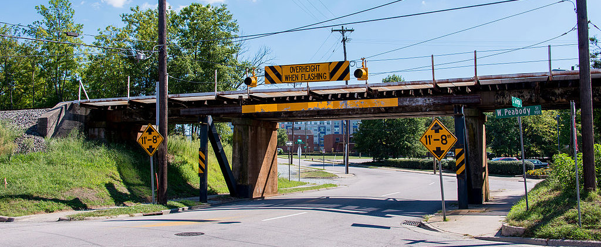

Fast UX problems found in eBay
1. Consistency of Navbar
- The “Hi #username” dropdown menu at the top left navbar is usually put at top right by almost every other site, lack of external consistency.
- The “Hi, #username” has an arrow indicating it has submenu, whereas the “My eBay” doesn’t.
- The hyperlinks are blue on the left but gray on the right.
- “My eBay” and “My eBay – Summary” goes to the same page, “Hi #username — My Collections” and “My eBay — My Collections” goes to the same page. Why not just combine them!
2. Consistency of "My eBay"
The “My eBay” is supposed to be the center for user to track Sell/Buy status, messages and account information. But its four tabs seems to come from four separated websites. Don't you click? Dear designers?
- The “Activity” tab looks best, with up-to-date font, coloring and layout. The active menu bar item is highlighted with the arrow shape which gives people clear visual indication.
- The “Messages” tab suddenly has a header ad inserted. Each links, are blue here. The arrow indicator is gone.
- The “Account” tab looks like ten years old. Breadcrumbs navigation is back at top. The tabs now have rounded corners and shadow effect, just like old days. I don't understand why Arial, not Helvetica is used on “My eBay” only in this tab, and why the colon mark is gone!
- The “Application” tab seems a little shy, so it doesn’t show up in the first two screenshots. Ad is gone, Helvetica is back. Breadcrumbs tells you that you are in “My eBay Beta” now.
3. User freedom of Changing username
Don't go nowhere once you decided to change your username. The username editing page doesn’t have a cancel button is not a big deal in other websites. But if eBay says: “You can only change your username once every 30 days”. It’s better to give people a way out for reconsideration rather than force them to use the Back button of their browser.
4. Confusing words/Speak user’s language
While eBay did very well on explaining special terms in many other pages, there is no description about what is a Telephone PIN. I don’t think PIN means number, but the button says: “Submit & Update Telephone No.”
5. Confusing words
“Call us” vs. “Call me”? They look identical expect the picture and the amount of people being called. People might figure out later about the direction difference. But why not change the “Call me” to “We call you” or “Get a call”.
The overall in-site consistency on page layout, design language and wording is disappointing on eBay. It feels like Frankenstein just put the site together using parts found in random places of the internet. These problems can still be found by March 20, 2017. I hope eBay can fix them ASAP. And I will be happy to see this article become an archive by then.
If hundreds of people made this mistake, there may be a reason (and a solution) for it

The “Can Opener”
The 11 foot 8 Bridge is a railroad overpass in Durham, North Carolina, USA. The 11 feet 8 inches clearance makes it 2 feet lower than average height of semi-truck trailer. Although it’s not the lowest bridge in the States, a YouTuber named Jürgen Henn started posting truck crash video of this bridge recorded from his webcam from 2008 and made this bridge famous among the internet. Based on the Wikipedia discerption, the bridge can’t be raised since rising a railroad bridge cost too much, and the street can’t be lowered because a sewer runs closely under it. This awkward situation leads to thousands of trucks lost their roofs, and gives this bridge a nickname: “The Can Opener”.
Luckily, the city installed a new warning system to notify any trucks taller than 11’8” with a sign of “Overheight Must Turn” and extra red light time. It indeed lower the rate of trucks hitting the H-beam steel protecting the bridge, but every now and then there are new victims coming. Just like this following video shows.
Let’s stop questioning the effeteness of government works, the story of this bridge makes a wonderful thought exercise of fixing real-life usability problem. The bridge is not a software program, but like many computer system, some UX problems are currently impossible to find a total cure due to many limitations. How do you temporarily alter the design to stop frustrating fresh users (or chop more roofs)?
Problem Defined
Error Prevention system
Blaming careless truck driver like many comments under the video is easy, but won’t help solving the problem until every US truck driver had heard of this bridge. The bridge won’t be relocated, the height is fixed, the intersection will remain, what can be done?
-
Break the common state, Bring Back the Self-awareness
-
Convey the Message
The human error usually appears when humans think they are safe, consistent, and everything is in normal condition. If I am a rental truck driver, this bridge looks normal to me since every bridge has yellow height warning signs and my head is far away from hitting the concrete wall. To fundamentally convey the warning message, we need an error prevention system that looks totally different from other bridge, while stays as an organic part of the environment.
Solutions
The “Overheight Must Turn” sign is contributing in crash prevention, but a better soliton is always possible. The core concept for preventing this human error is to convey the prioritize warning information, and makes it stands out from all other white noise info human brain takes consistently. The best way to do so is to make the warning looks different than the environment.

Solution 1
Billboards on the road sometimes attracts more eyes than warning signs. When sensors find an upcoming over height vehicle, they trigger a signal to light up the warning billboard. Speak Human Language rather than icy Traffic Warning Language will convey the message better, since there is enough space to put the image with text. An advertisement-style picture with off-roofed truck will instantly bring people’ awareness when they are driving similar trucks or RVs.
If we have the luxury, we can also put shock sensor on the H-bar so each crush will be added up to the counter of a microcontroller. Numbers on seven-segment-display will make the billboard more lifelike.